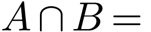
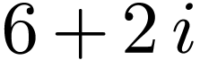
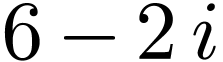
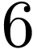
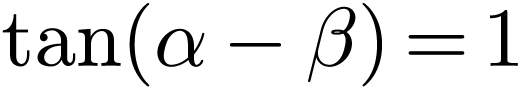
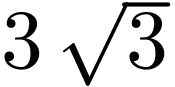
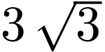

已知集合，，则
| A. | B.  |
C. | D. |
| A. | B. | C.  | D.  |
中国的古建筑不仅是挡风遮雨的住处，更是美学和哲学的体现.
如图是某古建筑物的剖面图，
， ，，是桁， ，，，是脊， ，，，是相等的步，
相邻桁的脊步的比分别为，
，，是桁， ，，，是脊， ，，，是相等的步，
相邻桁的脊步的比分别为， ，，
，， ，若，，是公差为的等差数列，直线的斜率为，则
，若，，是公差为的等差数列，直线的斜率为，则
| A. | B. | C. | D. |
已知向量，，，若，则实数
| A. | B. | C.  |
D.  |
甲乙丙丁戊名同学站成一排参加文艺汇演，若甲不站在两端，丙和丁相邻的不同排列方式有
| A. 种 | B. 种 | C. 种 | D. 种 |
若，则
| A. | B. |
| C. | D.  |
已知正三棱台的高为 ，上下底面的边长分别为和，其顶点都在同一球面上，则该球的表面积为
，上下底面的边长分别为和，其顶点都在同一球面上，则该球的表面积为
| A. | B. | C. | D. |
若函数 的定义域为
的定义域为 ，且，，则
，且，，则
| A. | B.  |
C.  |
D. |
 为坐标原点，过抛物线
为坐标原点，过抛物线 的直线与
的直线与 交于
交于 ，
， 两点，点
两点，点 的斜率为
的斜率为 为正方形，
为正方形， 的体积分别为
的体积分别为 ，
， 满足
满足 ，已知
，已知 的取值范围为
的取值范围为 两点，且
两点，且 为等差数列，
为等差数列， 为公比为
为公比为 的等比数列，且
的等比数列，且 的三个内角分别为
的三个内角分别为 ，
， ，
， 位这种疾病患者的年龄，得到如下样本数据频率分布直方图．
位这种疾病患者的年龄，得到如下样本数据频率分布直方图． ;
; 精确到
精确到 的高，
的高， 是
是 ，
， 且斜率为
且斜率为 且斜率为
且斜率为 时，讨论
时，讨论